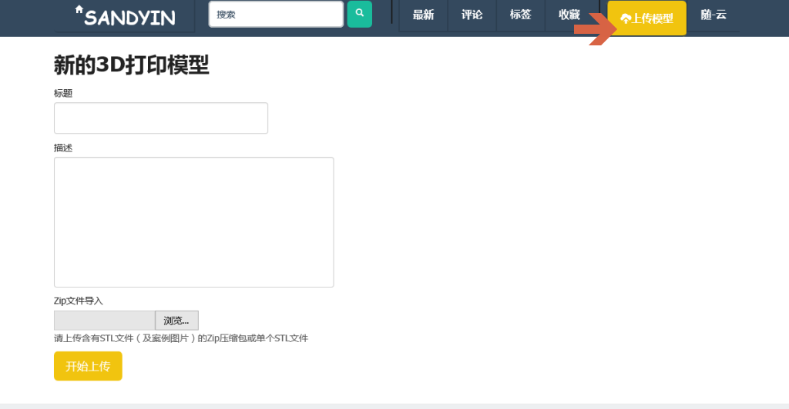
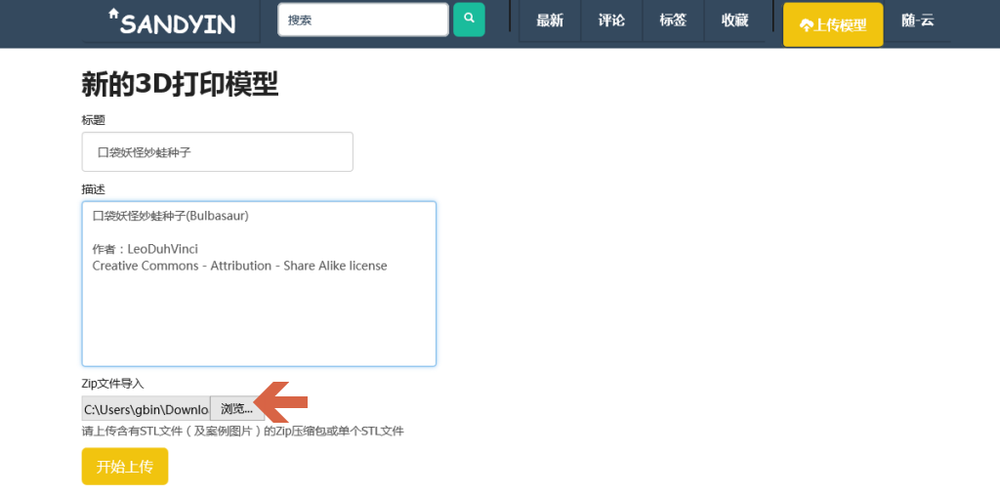
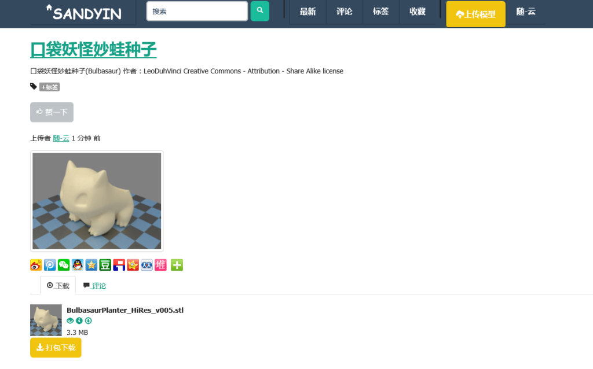
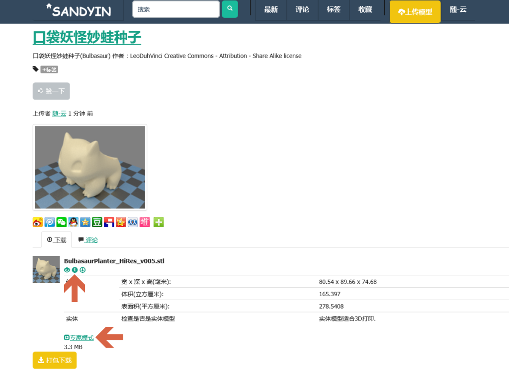
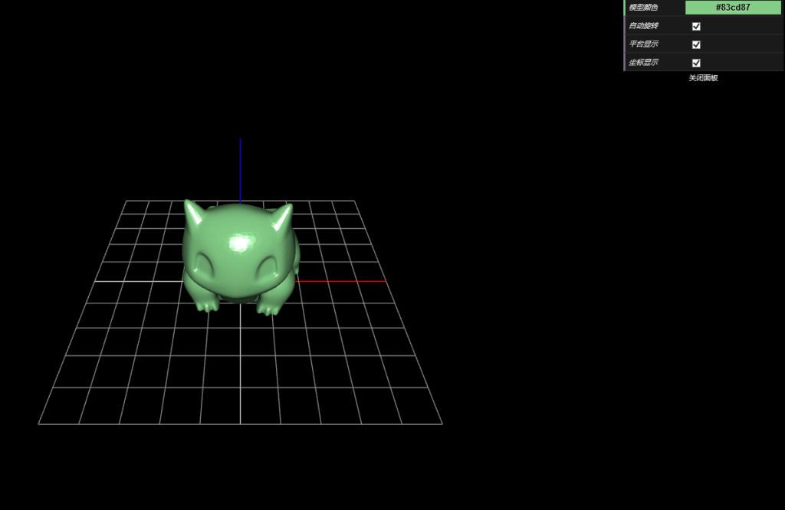
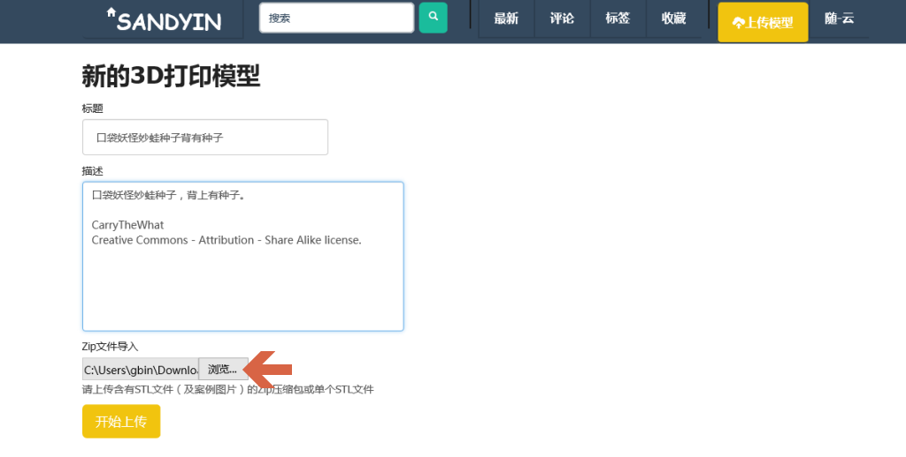
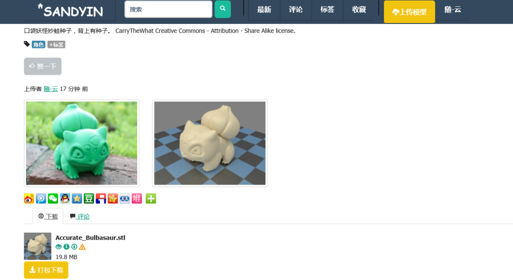
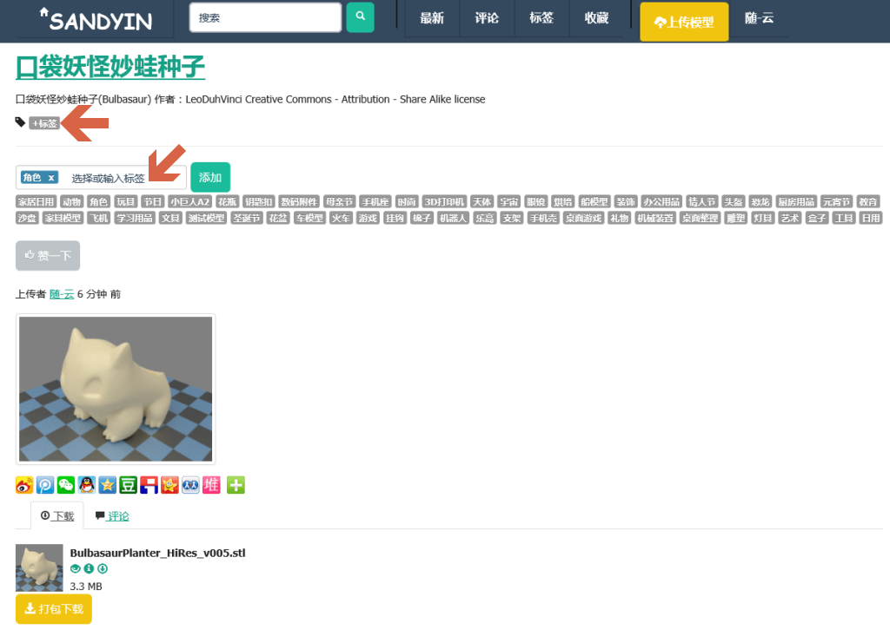

如何上传模型
模型的上传可以是单个的STL文件，也可以是包含至少一个STL文件的文件包（zip文件）
单个STL文件上传
如果没有附加图片，而且只有一个STL模型文件，可以采用单个STL文件上传方式。

登陆以后点击右上角的“上传模型”来打开上传模型页面。

点击“浏览”，选择一个需要上传的STL文件，给出一定的标题和描述，如果已知作者和版权 ，可以注明一下，然后点击“开始上传”

上传完毕后，服务器会分析模型和自动生成缩略图（需要一定时间，稍等片刻刷新一下就有 分析结果）

模型分析后点击模型旁边的小“i”图标查看基本信息，点击“专家模式”查看详细信息

点击模型旁边的小“眼睛”图标可三维立体检查模型
多文件上传
如果模型文件含有图片，或者有多个STL文件组成，可以采用多文件zip包上传。

把STL文件连同附加的图片打成zip压缩包，点击“浏览”选择这个压缩包。

上传以后图片会首先显示，稍等片刻，各个模型文件会自动生成缩略图和生成信息。
给模型打标签
为了方便其他网友查找和增加曝光，可以给模型打上标签。

点击“+标签”小按钮，可以在输入框中输入新的标签，也可以选择已有常用的标签，然后点击“添加”来应用标签。
打标签可以方便归类和曝光